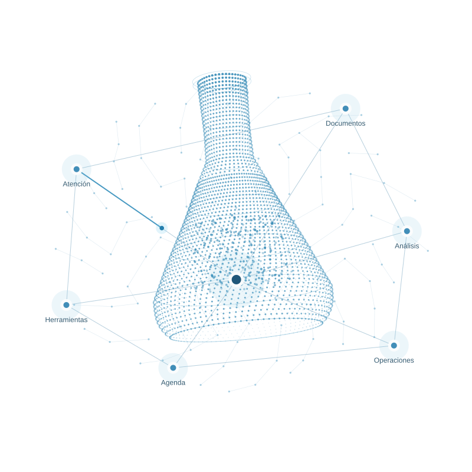
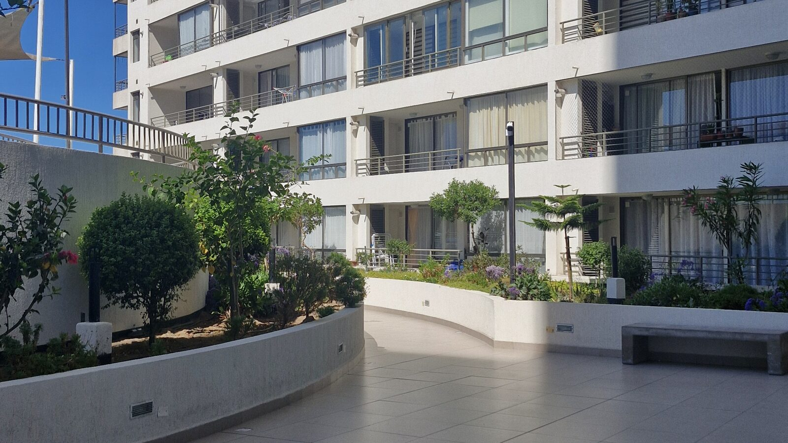

LABORATORIO DE IA · CHILE
Inteligencia
artificial.
Impacto real.
Diseñamos tecnología que resuelve lo cotidiano,
para que tu equipo se concentre en lo importante.

Laboratorio / Matraz
Menos tareas repetitivas.
Más posibilidades.
No empezamos por una herramienta.
Empezamos por lo que necesitas resolver.
Atención que sigue el ritmo
de tus clientes.
Chatbots de WhatsApp para responder consultas, coordinar reservas y acompañar a tus clientes, incluso fuera de horario.
Chatbots de WhatsAppTu operación, conectada.
Integramos correos, planillas y sistemas para que la información avance sin copiar, pegar y volver a empezar.
Automatización con IATu desafío no viene
en una plantilla.
Agentes de IA, buscadores sobre tus documentos y software diseñado para la forma en que trabaja tu empresa.
Desarrollo a medidaLa IA empieza con las personas.
Talleres prácticos para que tu equipo use la inteligencia artificial con criterio, confianza y aplicaciones concretas.
Capacitación para empresasDEL PROBLEMA A LA SOLUCIÓN
Un proceso claro.
Sin cajas negras.
La confianza no se pide. Se construye entendiendo qué vamos a hacer, por qué y cómo sabremos si funciona.
- 01
Entender antes
de construir.Revisamos contigo el proceso actual, las dificultades y lo que sería un buen resultado.
Un problema bien definido - 02
Probar con
un alcance concreto.Diseñamos una primera solución y la contrastamos con situaciones reales de tu operación.
Una solución que puedes evaluar - 03
Integrar, medir
y mejorar.Conectamos la solución a tu flujo de trabajo y acordamos cómo evaluar sus resultados.
Un siguiente paso con evidencia
Tecnología de cerca.
Visión de largo alcance.
Acuaria Labs es un laboratorio de inteligencia artificial con base en Antofagasta. Desarrollamos automatizaciones, agentes y soluciones a medida para empresas de la región y de todo Chile.
Nos interesa tanto construir como compartir lo que aprendemos. Por eso, la educación y la experimentación también son parte del laboratorio.
Conoce el laboratorio en LinkedIn
La próxima generación
también construye.
Conoce nuestro campamento tecnológico.
Antes de empezar.
¿Necesito saber de inteligencia artificial?
No. Partimos por tu negocio y el problema que quieres resolver. Te explicamos las opciones y sus límites sin dar por hecho conocimientos técnicos.
¿Trabajan solo con empresas de Antofagasta?
Nuestra base está en Antofagasta y trabajamos con empresas de todo Chile. La modalidad de trabajo se define según las necesidades del proyecto.
¿Pueden trabajar con las herramientas que ya usamos?
Evaluamos tus sistemas actuales y sus posibilidades de integración antes de proponer una solución. La compatibilidad, los accesos y el manejo de datos forman parte de esa revisión.
EL SIGUIENTE PASO ES UNA CONVERSACIÓN
¿Qué podríamos
resolver contigo?
Cuéntanos qué le está quitando tiempo a tu equipo. Veamos si la IA puede ayudarte.
Conversemos por WhatsApp hola@acuarialabs.cl